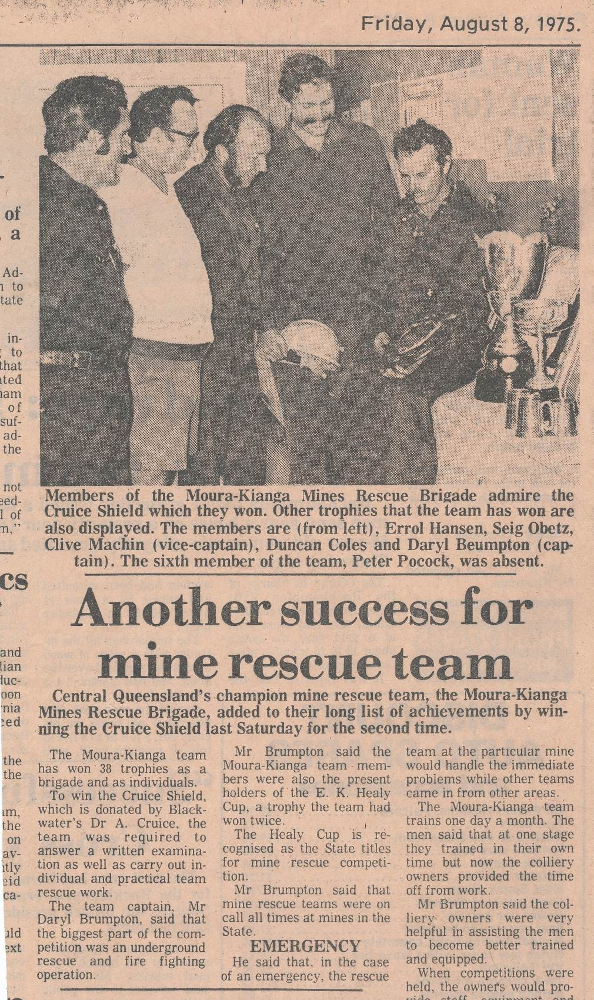
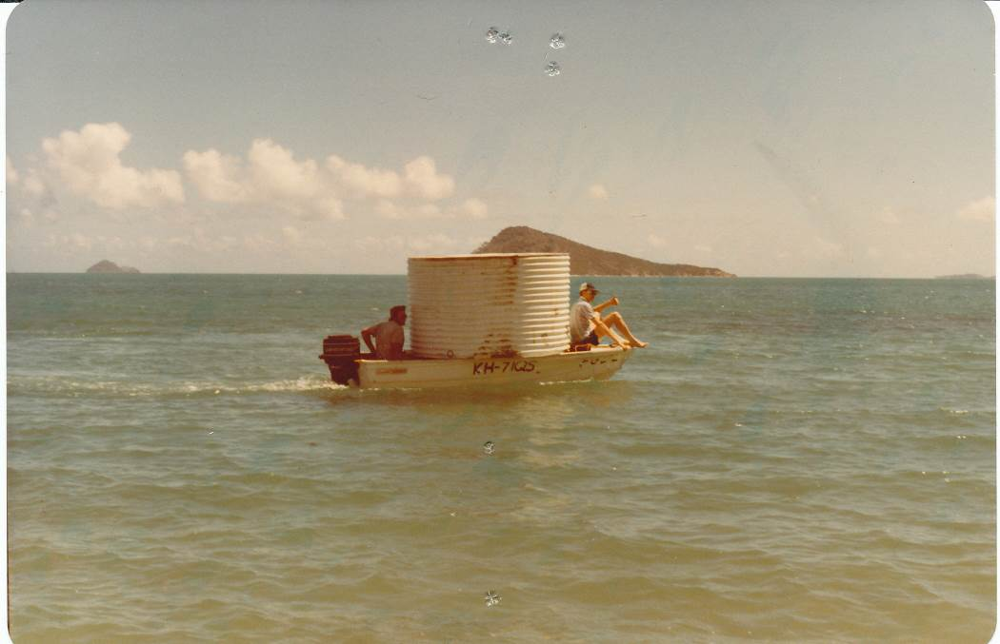

History 1960 - 1984
Scouts played an important role in mines rescue at Booval for a number of years. They would assist teams in rebuilding suits after training or a callout. They were trained on the maintenance of suits and other operational procedures.
The Governor of Queensland was the head of scouts at the time and came to Ipswich. He went underground and witnessed the scouts of the time assisting mines rescue personnel.
Back row scout C. Machin went on to become a superintendent in Mines Rescue
Above is the Boy Scout badge in Mines Rescue.
January 16. First training day at the Bowen Coalfields Mines Rescue Station (Collinsville as we now know it).
Collinsville Rescue Station early days
The first National competition was held in Wollongong and yes, it was won by Southern Mines Rescue from Wollongong.
It took Queensland 13 years to win a National; it was won by Booval in Cessnock in 1976. Bevan Kathage was the captain.
Queensland has won the National only 16 times in the past 45 years, 11 of which have come in the last 14 years.
Drager releases the BG 174
November 13. Rylance Number 3 at Dinmore, near Ipswich, Les Kerslake was buried for 19 hours.
A large mobile borer was rushed from Brisbane and a rescue squad of 60 was given the task of tunneling down. At 0815 Kerslake was pulled out feet first.
During 1963 a committee was formed at Collinsville. This came about, although belatedly, following criticism by the Royal Commission into a disaster at Collinsville in 1954. At the time of the disaster, rescue equipment was available, however it was non-functional due to poor or non-existent maintenance.
Thursday September 8. The first meeting of the Collinsville rescue station. Attendees were R. McKenna, L. Cumner, K. Elliot, D. Rose, Roy Brunker, N. Woolley, R. Woolley, H. Davis
September 22. Trevor Green and Jim Train from Wormald Bros attended training at Collinsville to demonstrate the BG 174.
1964 Newcastle team competing at the first interstate competition held in Queensland
Trophy from the 1964 competition
Mr. Kev O’Reilly still keeps the trophy he won in 1964
January 24. An electric oxygen pump is used for the first time to fill cylinders.
February 15. Collinsville’s first rescue job was to build a seal at Dacon No. 3 mine in a “blackdamp laden atmosphere”, all went well.
February 28. Tom Spottiswood appointed Superintendent of Collinsville.
June 8. Equipment is relocated to the new Mines Rescue Station.
November 30. Saw the first annual dinner function for Collinsville which went on to become a very important part of the year for its rescue members over the years. The first was held at the golf club and was attended by members of the management committee and a “film projectionist” showed two films from the NSW film library.
Booval rescue brigade 1967
February. Booval brigade attended Abermain Colliery in February where a pre-detonation of explosives underground had cost one life.
September 28. Collinsville attended their first competition. It was held in Booval and they were 2nd. This was the beginning of the inter-station competitions in Queensland.
November 28. The second annual social function was held and was attended by the Attorney General, the Under Secretary of Mines, the Chief Inspector, members of the committee and 16 rescue members. The runners-up trophy was presented to the team from the Booval competition by E.K Healy.
Neville Woolley, (Unidentified), Billy McNaughton, Harry Davies, Don Livermore, Ron Woolley
June 30. The Collinsville team was chosen to compete in the next Booval competition on July 26. The competition was put on as a display for Mr. E. McCarthy of the Queensland Coal Board and G. Hardie. There was great political interest in how the new rescue station and personnel were going in Collinsville.
July 26. Collinsville wins the inter-station competition (but did not get the Mills cup). They gain a position in the inter-state competition on November 8, held at Box Flat No.7. Captain N. Woolley, Vice Captain R. Woolley, R. McKenna, P. Nielson, E. Phillips, W. McNaughton
(This shield is missing from the cup, a Booval team is on the cup for 1969)
July 25. Collinsville mines rescue host the first Queensland competition held outside of Ipswich.
Three teams from Collinsville and one from Booval competed. It was won by a Collinsville team captained by P. Nielson.
October 10. Collinsville traveled to Booval and won the Brooks challenge (the shield for 1970 is not on the Mills cup). This win made two in a row for Collinsville and earned them a trip to Newcastle for the inter-state. Only a five man team competed in the competition as Peter Nielson injured his back on the eve of competition.
Collinsville competing in Newcastle district 1970
Captain Ron McKenna, Vicecaptain Barry Biggam, Peter Nielsen, Ken Robinson, Bill Sene, Bill McNaughton
April 16. A meeting in Rockhampton was convened to address the subject of Mines Rescue. Representatives of the Central Queensland Coal Producers, the Queensland Coal Owners Association, and Department of Mines were present. It was agreed that there was a need for a rescue station at Blackwater and a committee of management to run it. The committee was called “The Central Queensland Mines Rescue Brigade Committee”, and the state at this time was divided into three localities for mines rescue purposes.
July 17. Collinsville host local competition, three local teams and one from Booval lead by Len Rodgers. The winners of the Brooks Challenge Cup were Collinsville No.1 team led by Ken Robertson.
The cup had been won by a team from Booval for 11 years prior to Collinsville as there were no other stations in Queensland. The cup presented by the Mills family was for competitions at Booval and after discussions, the Mines Minister decided to provide a new silver cup for the top rescue team in the state.
A beautiful two foot high silver trophy was donated by the minister for mines Mr. Camm in honour of his under-secretary Mr. Healy for his past services in regards to the Mines Rescue activities. The trophy was named “The E.K. Healy Cup”.
October 2. Collinsville win first “E.K. Healy Cup” at a competition in Ipswich, held at Bogside No.3 Colliery. This was the third year in a row Collinsville had won the intra-state competition. Team Members: Captain K. Robertson, Vicecaptain R. Wooly, W. Barry, S. Bulloch, J. Williams, G. Watson.
Photo; K. Robinson Collinsville Captain receives the Brooks Challenge Cup from the Hon. Ron Camm, Minister for Mines and Energy. E.K. Healy in foreground
Collinsville team members 1969
Mines Rescue's Darkest Hour
July 31. Box Flat mine explosion, 17 lives lost, nine of which were Rescue Brigade members. Clarence Wolski, Rescue Member, died in March 1974 from injuries he received, bringing the total to 18 lives lost.
R.N Hardie (Mines Inspector), saw a number of men working in the tunnel mouth. Others were waiting to go down. Smoke started billowing from Number 5 and Hardie began walking to the entrance for a look. He got 25m when it blew. Hardie: “I recollect a suck back of material towards the tunnel mouth followed by a huge ball of bright red flame which shot out and illuminated the area for hundreds of feet”
“Merv Jensen, Graham Smith and Clarence Wolski, Ron Hollett, John Halls, Pat Farrell part of a third shift waiting to go down were injured when the brick wall of the deputy's cabin blew over”.
Allen Berlin, Lance Waldon, Billy Kingston were filling sandbags in preparation for sealing the portal of No.7 and were blown over buy the blast receiving burns and shrapnel injuries from the blast.
Those lost:
Surface:
- William Drysdale
- Clarence Wolski
- Kenneth Cobbin
- Walter Williams
Underground
- William Drewett
- Andrew Haywood
- Brian Randolf
- Darryl Reinhart
- Harold Reinhart
- Brian Rasmussen
- Walter Murphy
- John McNamara
- William Marshall
- Mervyn Verrenkamp
- Robert Lloyd Jones
- Leonard Rodgers - Captain
- Maurice Tait
- John Roach
Box Flat 1972
Mining Inquiry Findings – Box Flat Colliery (brief only)
Mr. Hardie, inspector of mines, went to the colliery in response to a phone call from Mr. Lawrie, manager of the mine who stated a fire was burning about 3 to 4 feet square at 6pm 30 July.
By the time Mr. Hardie went down the mine it was burning fiercely and much bigger. Itwas apparent to him the fire could not be controlled by application of water. After they had been down there for some time, Pat Farrell advised him that there was smoke coming down the intake, and advised getting the men out.
All returned to the surface at about 10.20 pm.
Mining Inquiry
The presence of smoke indicated re-circulation to Hardie. Hardie and others reentered the mine at 11.15pm with a view to rectify the doors 40 yards out-buy of the underground haulage. They were unable to reach the doors due to smoke.
A further attempt to reach the doors was made in breathing apparatus by way of traveling at pit bottom, this also failed.
At this point Mr. Hardie said it was apparent that attempts to get around the fire in No.5 were finished and again returned to the surface at 12.15am 31 July.
It was decided to investigate the practicability of cutting off the air intake from No.7 to No.5 which was feeding the fire in No.5. They returned to the surface at 0120am.
Basing their findings on the conditions in No.7 it was decided that it was feasible to make an attempt to control the fire by temporarily sealing off stone drives from 7 to 5, some 500 yards from the surface.
A team of men entered the No.7 tunnel with the intention of carrying this decision into effect. A short time afterwards, John Roach, a member of the team, rang the surface and advised that smoke was backing against the intake in No.7, where previously airflow was normal. Just after this, the explosion occurred.
- A spontaneous heating occurring in a pile of fallen coal in No.2 level of No.2 South section in No.5 mine of Box Flat Extended Collieries on the weekend of 29/30 July, 1972.
- This heating was assisted by the eleven hour fan stoppage, during which period the reduced air flow allowed the heat generated to accumulate to a point of self ignition.
- Fumes from the fire became evident in the intake airway.
- This heating developed into a large fire, which was assisted by the increased air flow when the mine fan was started.
- Efforts to extinguish or seal the fire were unsuccessful
- An explosive mixture of gases generated from the fire, and possible accompanied by water gas, was ignited. Coal dust was active in the explosions that propagated throughout the mine.
There is little doubt in the minds of the inquiry, that re-circulation played a most important part in the events that night. It is clear that it was present at an early stage; certainly some hours before the explosion. Apparently, the significance of this condition did not impress itself on the minds of those responsible for the conduct of operations, or if it did, they did not accurately assess the potentiality of danger arising from it.
It must be observed that it appears that no one questioned the course of conduct proposed, from which it follows that all present were apparently in agreement with the assessment of the position made.
There were other experienced men present, who were aware that re-circulation was taking place, but it seems that they were more concerned with the danger of being overcome with smoke and gases contained in it.
It appears that a failure of all these people to advert to the distinct possibility of danger from explosion stems from widespread lack of knowledge of the danger associated with the conditions which prevailed that night. It appears that this lack is general in the district, in as much as experienced and qualified personnel from other collieries comprised part of the Mines Rescue team that night, and none of them appear to have adverted to the danger of explosion.
This is an area where education of all personnel associated with mining might be improved.
October 28. A building at the Booval Station was opened by his Excellency Air Marshall Sir Colin Hannah, Governor of Queensland as a memorial to the Members of the Booval Mines Rescue Brigade who lost their lives in the Box Flat explosion.
Booval Station 1972
Box Flat Memorial in 2008
August 25. Sirius Creek #2, Blackwater, explosion. One life lost. Explosion caused by an oxy acetylene flame igniting methane close to the floor of the East Drift roadway.
Moura Coal Festival
September 20. Kianga explosion, 13 lives lost.
The woman’s auxiliary under Mrs. Pound, Nugent, and Harris set up a canteen to sustain Rescue party members. Mrs. Pound stayed there for 20 hours. With smoke belching from the tunnel mouth and the men almost 2 km underground, rescuers would have faced almost certain death.
Kianga 1975
Kianga Car Park

August 7. E.K. Healy (Under Secretary for Mines 1962 – 1975) opened the Central Queensland Mines Rescue Brigade Blackwater Mines Rescue station.
Teams in the Blackwater district competed for the Cruice Shield from 1974 – 1978. Dr. Tony Cruice was the Blackwater doctor at the time and kindly donated the shield.
Superintendent Tom Spottiswood (Centre)
Kev Healy presenting the E. K. Healy Cup of 1977
This was the first time the E. K. Healy competition was held at the new Blackwater station.
Bill Roach Chief Inspector of Coal Mines at the 1977 E. K. Healy presentation
E.K Healy Cup winning team 1977, Moura/Kianga
Blackwater team 1976
CABA training in Blackwater

CABA training in Blackwater
September 11. Collinsville new Mines Rescue Station opened by the Hon. R.E. Camm. The station was named the “E.K Healy Mines Rescue Station” in honour of Mr. Kev Healy recently retired Under-secretary of the Mines Department.
Equipment had been available at Collinsville since 1923.
Rescue equipment was supplied by the Booval station just after the Mt Mulligan disaster. The equipment was stored at the mines in a sub-station arrangement and each mine was responsible for maintenance of the equipment until a rescue superintendent was appointed.
Opening Day Collinsville
Training Early Days at Collinsville
A Collinsville team 1977 with the new trophy donated by Collinsville coal for competition in the Mackay inspectorate.
Team at Leichhardt Colliery
Committee meeting in Blackwater 1989
The State Coordinating Committee was formed. The committee comprised the Chairman and Secretaries of the three brigades and was chaired by the Chief Inspector of Coal Mines. It was initiated following a curtailment of funds for the 1979/80 financial year, and it was also seen at the time that there was a pressing need to standardise various aspects of the organisation’s activities and to establish mutual assistance.
The committee quickly reached the conclusion that there was an urgent need to have an independent assessment made of the organisation of both open cut and underground mines rescue. Mr. T. Marshall was subsequently appointed to undertake this work and he presented his report to the three committees in June 1981.
The conclusion and recommendations made in his report are as follows.
"The mines rescue organisation at present provides a service oriented towards underground mining. There is a definite need for the organisation to expand its activities to provide for all mining, surface and underground, in fact there is an obligation under the Coal Mining Act to do so. It is recommended that the Mines Rescue for Queensland be organised on an industry basis catering for all mines.
To build an integrated organisation for the State, a coordinating committee representing all areas and sections of the industry, endowed with the necessary power, should be established.
A full-time director responsible to the proposed coordinating committee to carry out the policy and decisions of the committee is necessary. The next step is the recruitment of a small staff of specialists who can be made available as instructors and researchers.
Standardisation of basic training, equipment and methods is a vital consideration and is best brought about by a committee, formed from all localities, of people involved in safety and knowing the present individual practical requirements of the Queensland mining industry.
Funding to provide and maintain the Mines Rescue organisation as an industry organisation for the State should be a charge on the industry."
(The 1986 Moura Disaster prompted the coordinating committee to re-examine the issue of a single state authority and eventually all three committees agreed that this would be a prudent move.)
The Brigade was renamed “The Queensland Mines Rescue Brigade”.
Memorial in Blackwater.
Gordonstone team won five E.K. Healeys in a row
Booval Brigade 1979
5 September. Moura mines rescue station was officially opened by the Hon I.J. Gibbs Minister for Mines. The station was known as the, “R.E Camm Mines Rescue Station”.
1982: Blackwater team at Moura, Paul Sargaison, Lester Shard, Des Smith, John Sargaison, Bruce Wright, Bill Winters, Lynton Luckel
The Pratap trophy was competed for in the Moura district from 1980 to 1987.
It was donated by Dr. Pratap who had a strong interest in the work of mines rescue.
Dave Kerr, Len Graham, Bob Sudal, John Blyton, Reece Robertson, Phil Reed, Ron McKenna with E.K Healy cup

Darryl Brumpton Captain and his Vice Captain
Leichhardt Colliery Fire, partial cause of mine closure.
Photograph of the pen from Capt C.Glazbrook’s pocket, after a session fighting the fire
Booval Station was renamed as the “Southern Queensland Mines Rescue Brigade” in accordance with the State being split into three separate divisions, Northern, Central, and Southern.
Booval members at street parade in Ipswich

Collinsville team moves water tank to rescue teams fishing shack at Johna Bay
Collinsville team
Collinsville station early 80’s
Trainee Tony Sellars at Collinsville. Tony went on to become state manager for Mines Rescue
Leaving FAB at a Collinsville competition
Preparing for Underground at Collinsville
Dysart station built.
A competition in 1982 saw teams flown by helicopter from Oaky Creek to the new station in Dysart for an exercise in the new hot and humid chamber.
Dysart station during construction
Central Queensland Mines Rescue Brigade – Cook Colliery No.1 Team, winners E.K Healy cup, Westfalen Colliery 1982
Don Ryan training in Dysart
Don and Lester Anderson at Don’s farewell
Don Ryan Dysart Superintendent 1984 – 2000